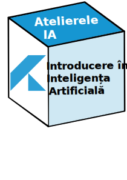
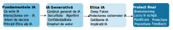

Versiunea online (acest website)
Materialele sunt structurate în 3 module și pot fi accesate pe orice dispozitiv. Vei găsi explicații, exemple și resurse utile.
Un ghid pentru a înțelege IA și algoritmii, pentru a recunoaște conținutul generat de IA și a naviga implicațiile etice și sociale ale IA în societatea de azi.

Cursul Introducere în Inteligența Artificială construiește fundamentele pentru literația în domeniul inteligenței artificiale.
Prin intermediul unor serii de ateliere, vom explora împreună conceptele de bază: ce este IA, ce sunt algoritmii și cum funcționează tehnologiile care ne influențează deja viața. Vom discuta despre inteligența artificială generativă, vom învăța să identificăm conținutul sintetic, precum deepfake-urile, și vom dezbate impactul acestora asupra industriilor creative și a societății. În final, vom aborda aspectele etice pentru a descoperi cum poate fi folosită IA în mod responsabil, în beneficiul tuturor.
Acest website este suportul teoretic al cursului și completează întâlnirile față în față, care sunt concepute să fie interactive și colaborative.
Materialele sunt structurate în 3 module și pot fi accesate pe orice dispozitiv. Vei găsi explicații, exemple și resurse utile.

Cursul față în față are 4 module. Pe lângă partea teoretică, accentul este pe activități interactive.
Participanții își dezvoltă:
Activități:
Structura completă a cursului: Module (
Acest curs este destinat elevilor de liceu și studenților, indiferent de profilul de studiu. Abordarea este non-tehnică, iar conceptele sunt introduse treptat, astfel încât nu este necesară experiența în programare.
La finalul acestui curs, participanții vor putea:
![Fotografie [Nume Prenume]](./images/profil.jpg)
Cu o pasiune pentru educație și tehnologie, am dezvoltat acest curs din dorința de a face conceptele complexe ale IA accesibile și relevante pentru tineri. Cred că înțelegerea acestei tehnologii este o necesitate pentru a naviga lumea de mâine. Abordarea mea este una deschisă și interactivă, axată pe dialog și gândire critică.
Puteți afla mai multe despre mine pe LinkedIn.
Dacă reprezinți o instituție de învățământ, o companie sau o organizație și dorești să oferi acest curs elevilor, studenților sau membrilor comunității tale, sunt deschisă la colaborare.
Cursul poate fi adaptat și livrat pentru:
Pentru a discuta despre un parteneriat sau organizarea unei sesiuni dedicate, te rog să îmi scrii la [adresă de e-mail pentru parteneriate].
Misiunea mea este ca acest curs să ajungă la cât mai mulți tineri, indiferent de mediul din care provin. Dacă împărtășești această viziune, te poți implica.
Caut parteneri care să mă ajute să ofer cursul gratuit elevilor și studenților din medii defavorizate. Sprijinul tău poate face o diferență reală.
Mă adresez în special:
Dacă dorești să devii un susținător al acestui proiect, te rog să îmi scrii la [adresă de e-mail pentru susținători].